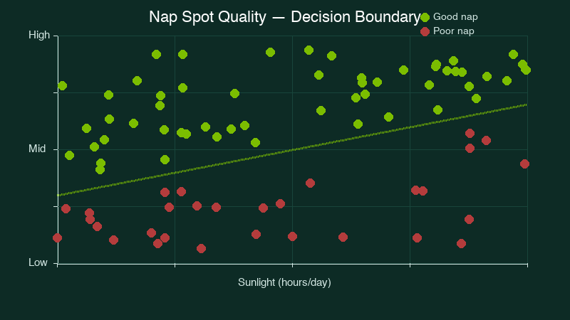

Medical Image Classification with PyTorch
A deep learning project focused on automating the classification of medical images to assist in diagnostic workflows.
Python
PyTorch
Computer Vision
More details
Problem
Manual review of medical imagery is time-consuming and prone to human error. This project sought to determine if deep learning could effectively categorize medical conditions from raw image data.
Approach
I built and trained a convolutional neural network (CNN) using the PyTorch framework. The process involved extensive data preprocessing, augmentation, and hyperparameter tuning to ensure the model could generalize well across different image sets.
Results & Impact
The project demonstrated a functional pipeline for medical image categorization, serving as a core piece of my portfolio for data analyst roles.